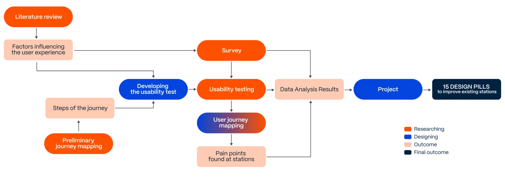
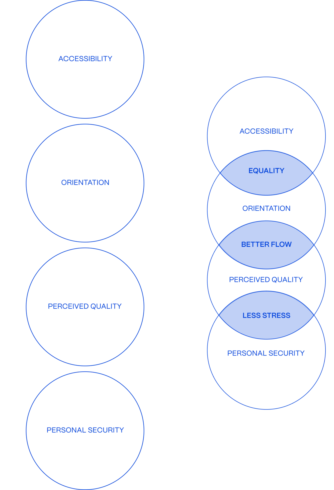
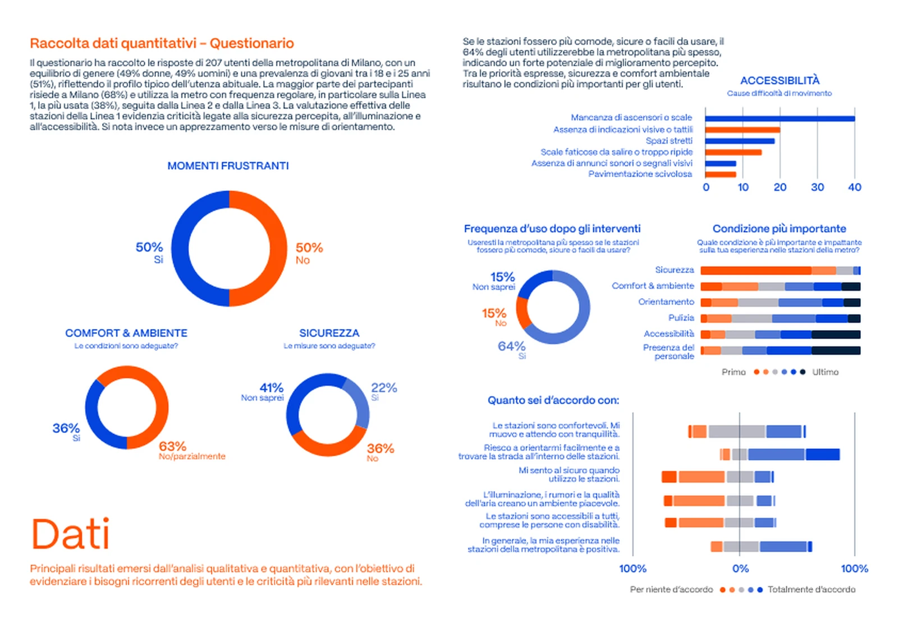
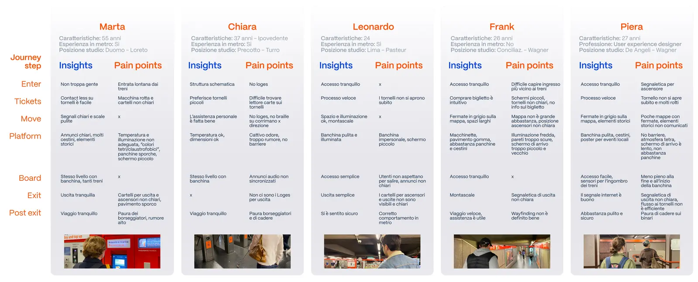
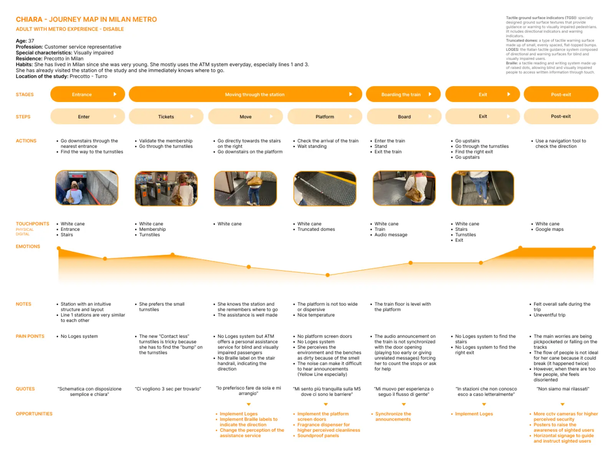
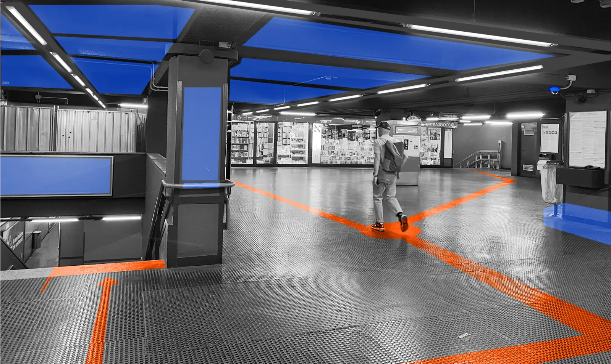
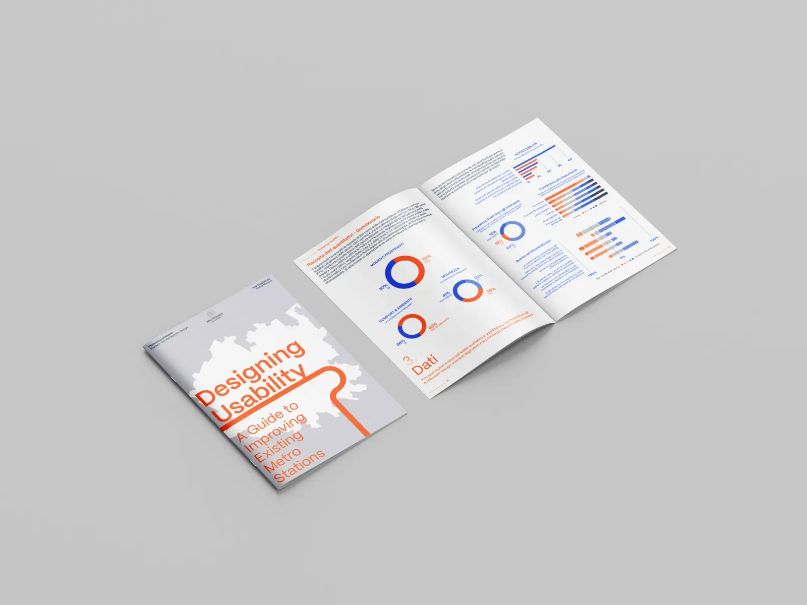

The project began with an extensive literature review exploring usability, accessibility and user experience in public transport, followed by mixed-method research combining quantitative and qualitative approaches to understand how people experience Milan's Metro Line 1.
Survey findings and usability testing were analysed together to identify recurring patterns, critical pain points and opportunities for intervention across the entire passenger journey.
Rather than redesigning individual stations, the project focused on developing a practical framework to support the continuous improvement of existing public transport infrastructure.
The outcome is Designing Usability, a practical guide containing fifteen scalable design interventions addressing wayfinding, accessibility, comfort, interaction and perceived safety.
The project demonstrates how service design and UX research methodologies can complement engineering and architectural approaches, helping public transport operators create infrastructures that are not only efficient, but also intuitive, inclusive and enjoyable to navigate.
A human-centred framework for evaluating and improving metro station usability, providing practical guidance for future renovation projects and public transport design initiatives.






